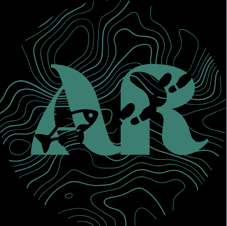
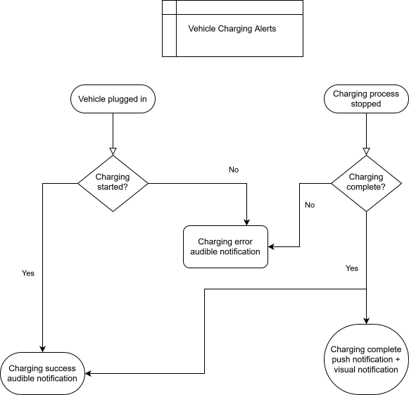

Shenghan Wang
I am a technical writer with 5 years of experience working as a specification engineer in the automotive industry. During that time, I discovered my passion for clean and consistent documentation. My projects included the creation of:
- Specification docs, API docs, and development docs for a technical audience
- Flowcharts, Kanban boards, and other diagrams
- Suites of test cases and testing reports
- Documentation connecting cross-functional requirements between teams with language and cultural barriers
Beginning in 2020, I was fortunate to have the opportunity to focus on personal passions, and reorient myself and my career direction. I am grateful to have had that chance, and I'm looking for the next step in my career as a technical writer!
SKILLS
- Technical writing
- Specification documentation
- Cross-functional communication
- User stories
- Technical specifications
- User guides
- Development docs
- API documentation
- Logic flow diagrams
- Test case creation
- Testing reports
- Text editors
- Microsoft 365

- Google Suite
- MadCap Flare

- Confluence
- Jira
- Git
- Markdown
- Notion
- Python
- JavaScript
- Postman
- Adobe InDesign

- DITA XML
- Postgres
DOCUMENTATION PROJECTS
AppRoach Fictitious mobile application
As my previous experience has all involved confidential information, I have also created a working portfolio for a fictitious application. These user doc samples are currently hosted on on these pages: AppRoach.
In addition, I have a sample API doc, currently hosted on GitHub.
Documentation Types: User guides, How-to docs, API docs Authoring Tools: Markdown
Technical Specifications
Facilitated feedback from various stakeholders across language and cultural barriers to ensure precision of the technical content
Documentation Types: Technical specifications, User stories, Development docs Authoring Tools: MS 365, Adobe Acrobat, ConfluenceFlow Diagrams
Ensured compatibility between behaviors of competing features.
Documentation Types: Technical specifications, User stories Authoring Tools: MS 365, Visio, Confluence
API for Prototype Application
Also served as scrum master and project manager for app team.
Documentation Types: API docs Authoring Tools: MS 365, ConfluenceReporting and Testing
Wrote training documentation for new testing hires.
Documentation Types: Test cases and testing reports Authoring Tools: MS 365 Word, Excel, and PowerPointPREVIOUS EXPERIENCE
umlaut company | Byton contract
- Created and refined logic flow diagrams and cross-functional specifications for in-vehicle technology modules including ADAS, infotainment systems, HMI and display systems, and audio processing
umlaut company | Toyota Motor North America contract
- Developed cross-functional specifications for next generation Apple CarPlay, Android Auto, and Amazon Music integration, collaborating with UI/UX design, third-party specifications, Bluetooth team, and vehicle cybersecurity team
- Product owner for remote vehicle health reporting feature, driving issue resolution and delivering weekly presentations until successful product launch
- Scrum master and product owner for prototype app development team, creating a proof of concept application for next generation head unit
umlaut company | Ford Motor Company contract
- Tested and triaged telematics and infotainment on next generation vehicles, including analyzing CAN network traffic and MQTT communication
- Trained a team of 8 on infotainment systems and testing
- Wrote and refined 100+ test cases and testing reports